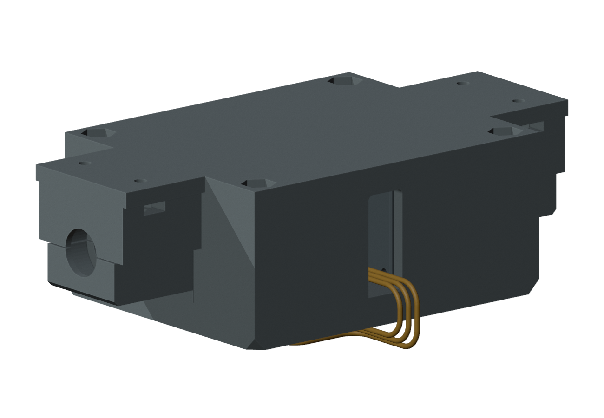
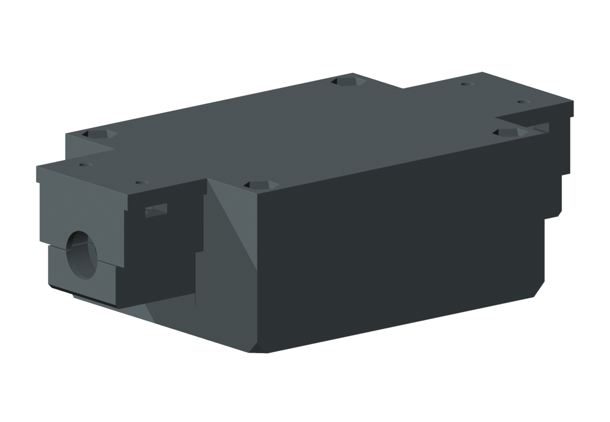
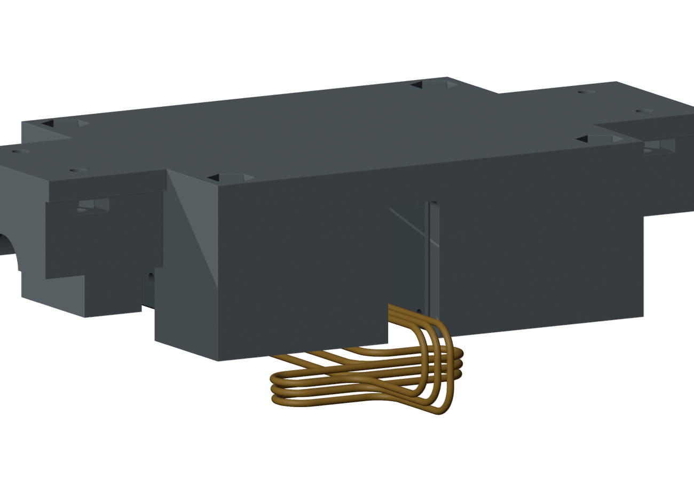
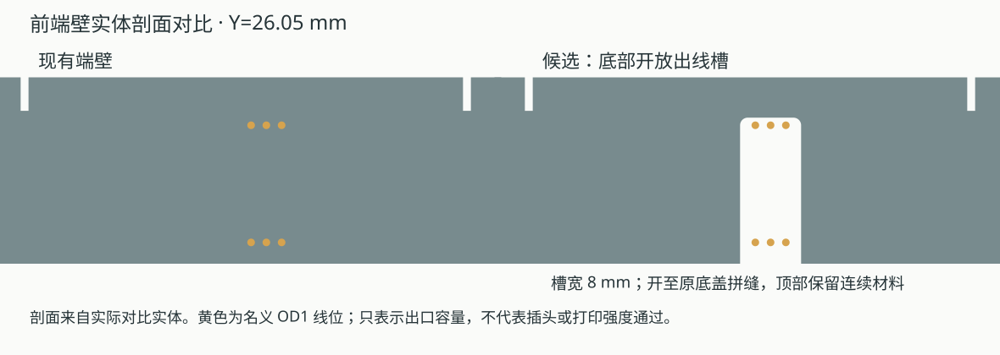
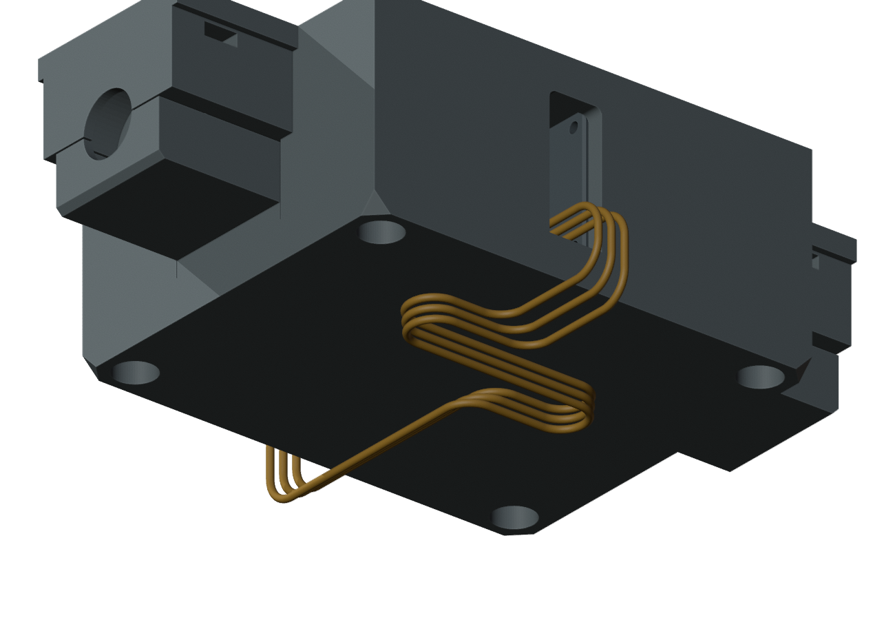
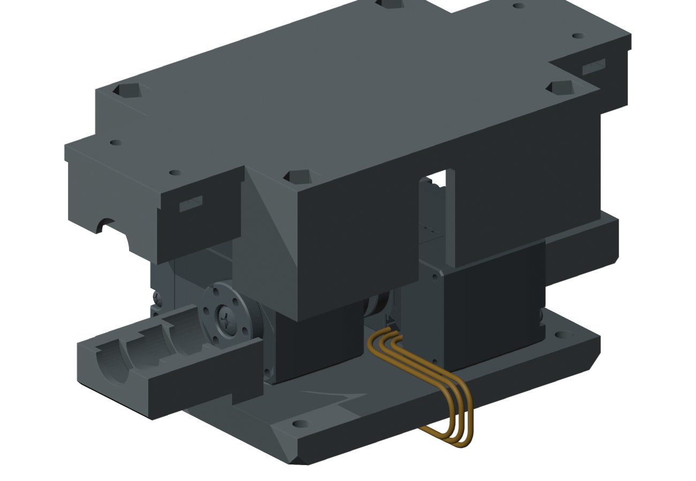

轮舵机出线槽候选
M1.58 基准 · 待确认 · 主模型尚未应用
建议：驱动上座前后端壁各增加一处底部开放的出线槽。
槽宽 8 mm，利用原底盖封口，先摆好带插头的线，再从上方合上上座。不增加打印件或螺钉。

为什么需要这处修正
已试的完整路线碰到现有前后端壁：插口旁能转弯，但线路继续延伸时被端壁挡住。候选给线路提供出口，并保留原轴承座、所有螺钉孔、顶板及底盖。





约 190 mm 导线放在哪里
下口到下口的三芯串接线候选，把余线安排在底盖下方、身体壳内。每根名义中心线均为 190 mm；线径采用你提供的约 1 mm。还需要固定余线，防止实际线材移动。

带线组装顺序
- 先在台面摆好两台电机、轴承与底盖，连接下口串接线，整理底部余线。临时支撑与实际固定方式仍待实物。
- 驱动上座从上方落下，让底部开放槽沿已有出线合上。101 个名义位置未检出新增硬质干涉；软垫压入仍单独保留待试配。
- 从底面装四枚 M3 螺钉，再继续承重板等既有装配步骤。螺钉装入及前后身体壳既有路径未与这根 U04 相交。

| 检查 | 结果及范围 |
|---|---|
| 打印件改动 | 只切两处声明区域；移除约 766 mm³，仍是一件连续实体。切削区域与轴承、紧固件的距离检查均达到 10 mm 检索上限，未把封顶结果当成精确距离。没有增加零件。 |
| 下口完整名义路线 | 18 个有限组合未检出实体或线间相交：外伸试值 0 / 0.5 / 1 mm，各配 6 种几何线位配对。不是实际端子针号映射。 |
| 选定名义路线间隙 | 对当前三角网格，最小零件间隙约 0.50 mm、线间约 0.40 mm；增粗到半径 0.6 / 0.7 mm 的两次包络检查也未相交。局部最小名义弯曲半径 3 mm，实际线材弯折资格待实物。 |
| 上口出口 | 9 个 OD1 名义短段通过；在假设零外伸、半径增至 0.7 mm 时，一根线碰到舵机自己的模型边缘，失败记录保留。完整主控端路线仍待新载板位置。 |
| 名义 U04 装配顺序 | 上座落下 101 个位置、4 枚螺钉各 69 个位置、前后壳各 275 个位置检查通过。仅覆盖本根 U04；保留原软垫接触及四处约 0.000022 mm³ 轴承源网格交叠，不等于物理配合通过。 |
| 仍待完成 | 真实插头与端子出口、实际弯折要求、余线固定、实际夹持及完整带线拆装、整机所有线束同时存在。完整线束保持 BLOCKED，实物 NOT_TESTED。 |
本候选尚未进入主模型、STL 或视频。局部 Blender 检查文件 （原研究引用，未收录于本快照） 便于检查出线槽与路线；完整模型仍是 mori_v1_2.blend。
来源与原始结果
主体检查（包含上口增粗失败） · 上口名义短段补查 · 两处出线槽参数 · 原路线碰撞记录 （原研究引用，未收录于本快照） · U04 顺序检查（含旧顺序失败） · 实际命令和日志
原厂电机来源、两个开放表面与逐字段假设沿用上一轮来源复核。线长、线径为用户约值；插头外伸 0 / 0.5 / 1 mm 和 1 mm 压接直尾均为试值，不是实测。
PROTOTYPE / UNVALIDATED。本页没有修改电路、引脚或元件选型，未向硬件对话发送指令；不制造、不裁线或上电放行。